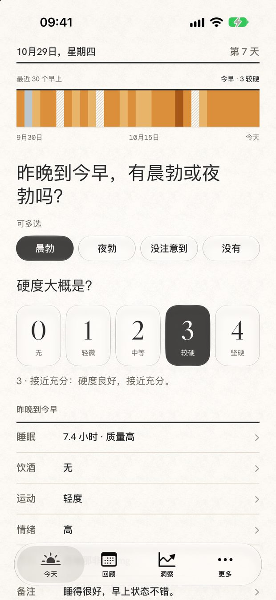
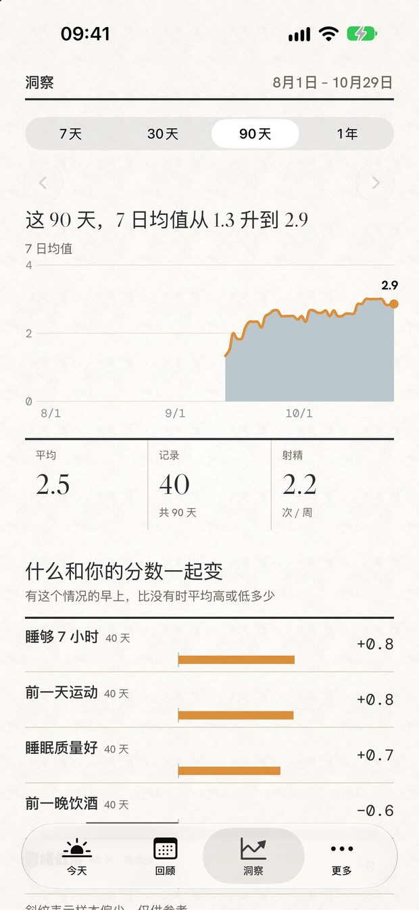
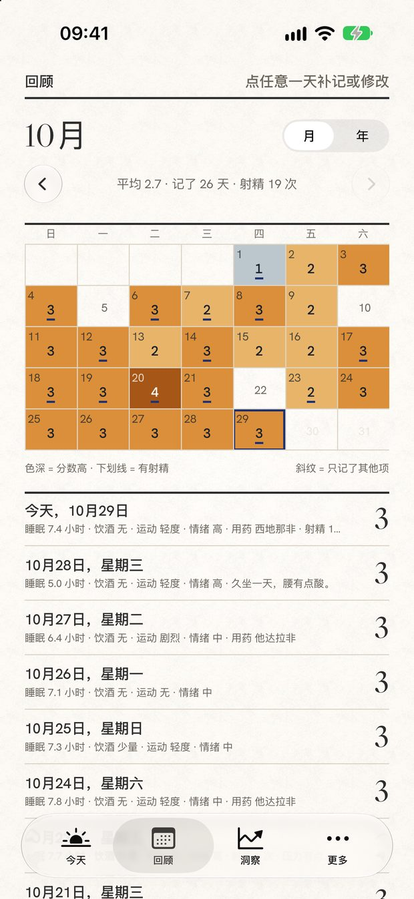

Asagiri Daily
朝雾
一份安静的私人记录
每天用 10 秒记下早晨的状态，看清睡眠、饮酒、运动、情绪与长期变化。没有账号，数据默认只保存在你的设备上。



每天一次，10 秒
- 记录晨间状态：晨勃 / 夜勃、0–4 的硬度自评，其他项目都可以跳过。
- 可选补充：睡眠、饮酒、运动、情绪、用药与一句备注。
- 自动保存：改完就走，不用找保存键。
回顾与洞察
- 回顾：月历用色深表示分数，年视图把 12 个月排成色带；点任意一天可以补记或修改。
- 洞察：7 天 / 30 天 / 90 天 / 一年，样本不够时会直接告诉你「还看不出规律」。
- 只谈相关：所有对比都明确标注相关性，不做因果推断，也不提供医疗建议。
完整版（一次买断）
- 完整洞察：90 天 / 一年趋势，以及睡眠、饮酒、运动、情绪、用药与分数的关系。
- iCloud 备份与恢复：每天自动备份一次，换手机时恢复；快照存在你自己的 iCloud 私有空间。
- PDF 记录报告：把一段时间的记录生成两页 PDF，打印或交给医生参考。
$9.99一次性买断，没有订阅 · 中国区 ¥68
打卡、回顾、Excel 导出 / 导入、Face ID 解锁、配色与提醒都永久免费。
隐私
- 没有账号，不需要注册。
- 记录默认只在本机，不上传服务器；没有广告，没有第三方统计。
- iCloud 备份是完整版的可选功能，只有你使用它时才会写入你自己的私有 iCloud，开发者无法读取。
朝雾是自我观察工具，不是医疗器械，不提供诊断或治疗建议。如有持续不适，请咨询医生。